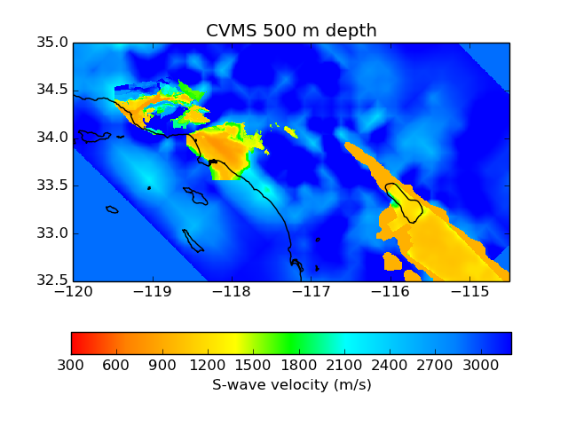

Coseis
Computational Seismology Tools
Summary
Coseis is an open-source toolkit for earthquake simulation featuring:
The Support Operator Rupture Dynamics (SORD) code for modeling spontaneous rupture and 3D wave propagation.
SCEC Community Velocity Models (CVM) codes, with MPI parallelization for Magistrale version (CVM-S), and new geotechnical layer implementation for the Harvard version (CVM-H).
Utilities for mesh generation, coordinate projection, and visualization.
The primary interface is through a Python module which (for high-performance components) wraps Fortran parallelized with hybrid OpenMP and MPI.
Coseis is written by Geoffrey Ely with contributions from Steven Day, Bernard Minster, Feng Wang, Zheqiang Shi, and Jun Zhou. It is licensed under BSD terms.
WARNING: Coseis is a research code under active development. Changes are frequent and it has known bugs!
Install
If on Mac OS X, first install Xcode from the App Store. From the Xcode preferences pane, install the Command Line Tools. Then install Homebrew, followed by Git and Fortran with::
brew install git gfortranOpenMP is broken in GCC 4.3 on Lion, so if you need multiprocessing speed-up, install either MPICH or a newer GCC version. Optionally, install and Anaconda for visualization and analysis.
Clone the source code from the [Coseis GitHub repository] (http://github.com/gely/coseis):
git clone git://github.com/gely/coseis.gitSet path variables for the Python module and executables. For bash shell, with the code located in your home directory (for example) add these lines to
export PYTHONPATH="$HOME/coseis" export PATH="$PATH:$HOME/coseis/bin"Run the
setup.pyscript to test your configuration. This will display all of the configuration parameters::python setup.pyThese parameters may be customized by creating a file
cst/conf/site.py. For example, the account for billing of service units, and email address for notifications may be specified insite.pymodule with::account = 'your_project_name_here' email = 'your.email@address.here'
Testing
To run the test suite interactively::
cd cst/tests
python test_runner.py --run=execOr, submit a job for batch processing::
python test_runner.py --run=submitAfter completion, a report is printed to the screen (or saved in run/test_suite/test_suite.output)::
PASSED: doctest.testmod(cst.util)
PASSED: doctest.testmod(cst.coord)
PASSED: doctest.testmod(cst.sord)
PASSED: cst.tests.syntax.test()
PASSED: cst.tests.configure.test()
PASSED: cst.tests.hello_mpi.test()
PASSED: cst.tests.point_source.test()
PASSED: cst.tests.pml_boundary.test()
PASSED: cst.tests.kostrov.test()Examples
CVM depth plane
 
Extract S-wave velocity at 500 meters depth. Plot using Matplotlib::
cd scripts
python CVM-Depth-Plane.pySource code: CVM-Depth-Plane.py
CVM-S fence diagram
Build a fence diagram similar to Magistrale (2000) figure 10. Plot using Mayavi::
python CVM-Fence.pySource code: CVM-Fence.py
CVM-S basin depth

Extract 3D mesh and search for the shallowest surface of Vs = 2.5 km/s. Plot over topography using Mayavi::
python Basins-Mesh.py
python Basins-Search.py
python Basins-Viz.pySource code:
CVM-Basins-Mesh.py
CVM-Basins-Search.py
CVM-Basins-Viz.py